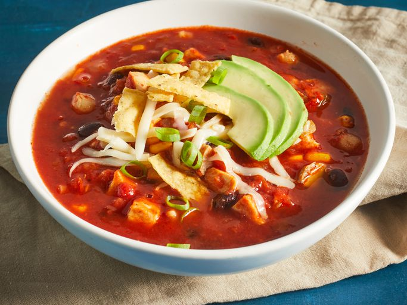

Chicken Tortilla Soup

Chicken Tortilla Soup is a delicious Mexican-inspired dish known for its flavorful broth, tender chicken, and aromatic spices.
This hearty soup often includes ingredients like diced tomatoes, onions, bell peppers, and a blend of cumin, chili powder, and
cayenne for a zesty kick. Topped with crispy tortilla strips and optional garnishes such as cilantro and avocado, it's a comforting
and satisfying choice that brings warmth and flavor to the table, making it a favorite during cooler seasons.
Is Chicken Tortilla Soup Authentic
Mexican Food?
Chicken tortilla soup actually is an authentic Mexican dish.
The traditional soup is made with chicken broth, tomatoes, garlic,
onion, chiles, and fried tortilla strips. There are also variations
of the soup, like ones that include beans.
How to Make Chicken Tortilla Soup
Making this Chicken Tortilla Soup is really simple, and it only takes 35 minutes.
You can find the full recipe below, but here's what you can expect:
- Saute the onions and garlic, then add seasonings, tomatoes, broth, and water.
- Allow to simmer, then add corn, hominy, chiles, beans, cilantro, and chicken.
- Simmer for a few more minutes then serve topped with your favorite garnishes.
Ingredients
- 1 tablespoon olive oil
- 1 medium onion, chopped
- 3 cloves garlic, minced
- 1 (28 ounce) can crushed tomatoes
- 1 (10.5 ounce) can condensed chicken broth
- 1 ¼ cups water
- 2 teaspoons chili powder
- 1 teaspoon dried oregano
- 1 (15 ounce) can black beans, rinsed and drained
- 2 large boneless chicken breast halves, cooked and cut into bite-sized pieces
- 1 cup whole corn kernels, cooked
- THERE ARE MANY I CAN'T WRITE IT ALL
Step by Step Guide to Make Chicken Tortilla Soup
- Gather all ingredients.
- Heat oil in a stockpot over medium heat. Add onion and garlic; sauté until soft, about 5 minutes.
Stir in chili powder and oregano.
- Stir in crushed tomatoes, condensed broth, and water; bring to a boil.
Reduce heat and simmer for 5 to 10 minutes.
- Stir in black beans, cooked chicken, corn, hominy, chile peppers, and cilantro.
Simmer for 10 minutes.
- Ladle soup into individual serving bowls, and top with crushed tortilla chips,
avocado slices, Monterey Jack cheese, and green onions.
Go To Top
Go to Home Page